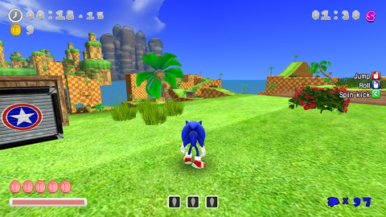
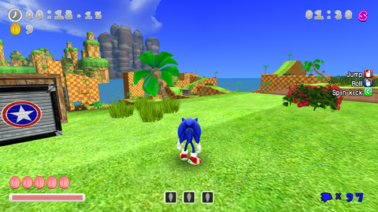

Installing Theme Mods
Where to get theme mods
The best source to get the latest mods is the Sonic World DX Gamebanana. All the mods on the main website will NOT work unmodified as they're incompatible (designed for the SAGE Demo or earlier). Any Themes made after 2022 should work, or labelled for V1.1 or later. Otherwise, contact the modder to figure out what version the theme is developed for.
Requirements
- Latest version of Sonic World DX (V1.2.7)
- IMPORTANT! Earlier V1.2 versions have bugged theme loading and may fail to recognise the mod!
- A Theme mod of your choice.
- Extracting software (WinRar or 7zip recommended!)
- Text editing software (Notepad is included on every Windows machine, VSCode helps with color coding) For this tutorial, I will be installing The Mario Theme. The instructions are the same for every theme.
Instructions
1. Download the Mod
Self-explanatory for some, complicated for others.
- click the page of the mod you wish to download.
- Scroll down to the files section, there is usually one.
- If there is more than one, download the one you want. Usually this is multiple versions. Get the most recent! (usually at the top)

- Save it anywhere, ideally away from the Mods folder for organisation reasons.
2. Extract the Mod
- Using the extracting software (I'll use WinRar), open the downloaded file.
- If all you see is a folder with the name of the mod, simply drag that folder and drop it into your Sonic World DX
Modsfolder.

- If the first thing you see when opening the archive is multiple folders and a settings.xml, Create a folder in the Sonic World DX
Modsfolder, then drag all of the contents into the created folder.
2.5 Mods.xml verification
If you started your game in 1.2.7 this step is not needed. Move on to Step 3
If you created a save before 1.2.7, the theme might not load in game. In order to make themes load, you will need a line in the xml.
If you never edited your mods.xml, then all you need to do is:
- Delete the mods.xml
- Once you open the game, a new
mods.xmlshould be present
If you edited the mods.xml to have custom locations, and don't want to lose it, then all you need to do is
- Add this line below the
sounds folderline:
This means the game will check all folders in the Mods folder for a theme, and if it detects a settings.xml, it will load it as a theme.
You can add a folder between the quotes if you want your Themes to be stored in its own folder.
3. Activate the Mod
- Open the game.
- Go into the Options menu.
- Go into the Themes menu.
- Press Skill 2 (The key/button labelled "Custom") to switch to the Custom Themes tab.
- Your theme should be visible. Select it, then exit out of the options menu for changes to take effect.

Your modded theme is now installed and ready to use!
 
